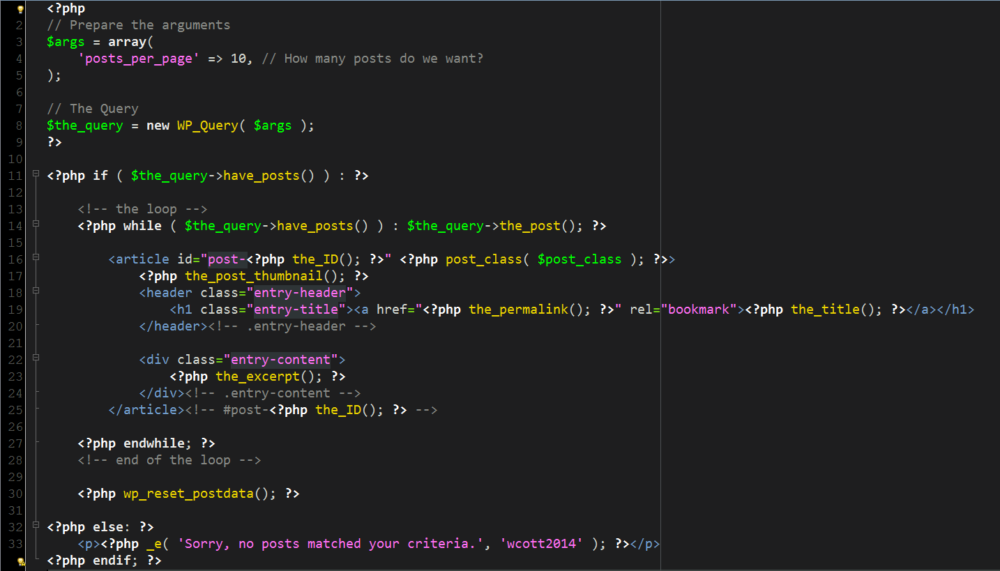
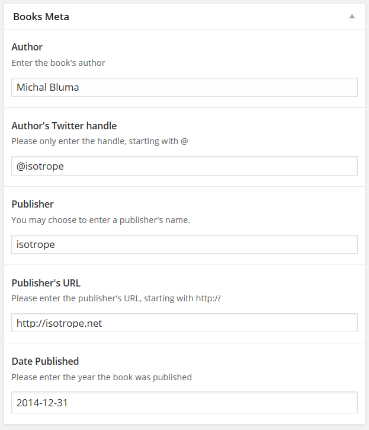

Down with Sliders!
Show them everything!
Michal Bluma
What we’ll cover
Masonry
WP_Query
We’ll be looking at a JavaScript library called Masonry that ships with WordPress and getting our toes wet with WP_Query, one of the most powerful tools in your WordPress arsenal.
Masonry
Created by David DeSandro, a designer at Twitter
Masonry has a pair of siblings named Isotope and Packery. They’re released by Metafizzy http://metafizzy.co/
WP_Query
If you’ve dived into theme files, chances are that you’ve seen WP_Query at work with functions like query_posts() or get_posts().
WP_Query
The resulting data was then probably passed through The Loop, its output handled with functions like the_title(), the_content(), the_post_thumbnail().
Today, I’ll show you how you can start leveraging WP_Query to get the info you want for your own custom loops.
WP_Query ressources
http://codex.wordpress.org/Class_Reference/WP_Query
http://codex.wordpress.org/Function_Reference/query_posts http://codex.wordpress.org/Template_Tags/get_posts https://codex.wordpress.org/The_LoopWill it float?
Let's layout some content
We've grabbed some content
With the magic of Floats, we can make it line up, side-by-side
...but what if our elements don't all have the same height?
Gaps!
That's where Masonry comes in
It’s all a trick
Alright, confession time:
That last page was a bit of a lie.
It does really use Masonry, but the elements were in a very specific order.
Why?
Because Masonry always keeps the same order for your elements.
It won’t do any magic shuffling to try and fill all the gaps.
If I was to give it the same elements with a different order, it’ll do its best, but the result might not be what we were expecting.
That’s where one of Masonry’s siblings comes in: Packery.
Packery uses a bin-packing algorithm. The trade-off is not knowing exactly where the elements will fall.
How do we actually activate Masonry?
With wp_enqueue_scripts!
Since it's already registered in WordPress, to turn on Masonry, we simply need to enqueue it
<?php
function enqueue_masonry() {
wp_enqueue_script( 'jquery-masonry' );
}
// wp_enqueue_scripts action hook to link only on the front-end
add_action( 'wp_enqueue_scripts', 'enqueue_masonry' );
?>
Wanna know which other scripts already come ready to activate in WordPress?
Simply check out the wp_enqueue_scripts page in the Codex: http://codex.wordpress.org/Function_Reference/wp_enqueue_script
Let’s put our bricks aside for a bit and look at how we can get the content we want.
Getting the content you want
Whether you want to get content from posts or even a Custom Post Type, the WP_Query class is always there to get the information for you.
You might have copy-pasted some code from the Internet that uses get_posts() or query_posts().
Chances are that you got some of the results you wanted and a whole slew of problems and weirdness that you weren’t expecting.

If we’re going to be preparing custom blocks of content, let’s just do it with WP_Query.
If you check out the codex information on WP_Query, I guarantee that you will be overwhelmed.
Don’t worry. This will be (mostly) easy!
With the help of WP_Query we’ll be able to do things like:
- Get me the 10 latest posts
- Get me the 20 most recent Books (Custom Post Type)
- Get me the last 7 posts in Category X and Y published in 2013 with the tags “awesome” and “sauce” written by “Steve”, order them by Title Descending and don’t mind the Sticky posts
Seem hard?
It all comes down to breaking up what you want to “ask” WordPress.
That’s where the arguments come in...
WP_Query arguments
Before we even start up WP_Query, we’re going to prepare an array of arguments to pass it.
This is how we’ll tell WP_Query what we want it to retrieve.
For starters, let’s go for an easy one:
The 10 latest posts.
You might want to use this for a widget, a shortcode, or something else altogether.
A "10 latest posts" set of arguments
$args = array(
'posts_per_page' => 10,
);
$args = array(
'posts_per_page' => 10,
);
posts_per_page might sound weird.
We want 10 posts.
That's it.
No pages.
All we’re actually telling it is how many to give us per page.
And we’re not using any pagination, so the result will be 10 posts.
“But how will it know that we want ‘posts’, in descending order?
- Because it can read your miiiiiind!”
Actually, it’s because it has defaults.
Whatever arguments you omit, it will rely on its defaults when returning the information you’ve asked for.
When it comes to sorting, the defaults are
$args = array(
'orderby' => 'DESC',
'order' => 'date',
);
If we go back to our previous arguments, sending
$args = array(
'posts_per_page' => 10,
);
will result in WP_Query running
$args = array(
'posts_per_page' => 10,
'orderby' => 'DESC',
'order' => 'date',
);
anyway.
Enough about arguments
What now?
How do we go from
asking it for what we want to
displaying what we want?
Time to go a little Loopy
Up to now, we’ve prepared arguments to pass to WP_Query.
<?php
$args = array(
'posts_per_page' => 10,
);
Let's feed them to the WP_Query class
<?php
$args = array(
'posts_per_page' => 10,
);
// the query
$the_query = new WP_Query( $args ); ?>
From now on, $the_query represents an instance of WP_Query with our arguments passed to it
All we need to do now, is loop through the results:
<?php if ( $the_query->have_posts() ) : ?>
<?php while ( $the_query->have_posts() ) : $the_query->the_post(); ?>
<?php the_title(); ?>
<?php endwhile; ?>
<?php wp_reset_postdata(); ?>
<?php else: ?>
<?php _e( 'Sorry, no posts matched your criteria.', 'your_text_domain' ); ?>
<?php endif; ?>
In essence, we're saying:
If you got some posts
<?php if ( $the_query->have_posts() ) : ?>
while you have posts, set them up for me
<?php while ( $the_query->have_posts() ) : $the_query->the_post(); ?>
and I'll take what I need from that information
<?php the_title(); ?>
We also have a little bit of code, in case we don't have any posts to show
<?php else: ?>
<?php _e( 'Sorry, no posts matched your criteria.', 'your_text_domain' ); ?>
<?php endif; ?>
Lastly, within the Loop (if we found posts), we also have a little function called wp_reset_postdata()
<?php wp_reset_postdata(); ?>
I'm simply going to ask you to trust me and always include it.
It's a habit that will save you a lot of grief when dealing with anything outside your loop.
Are you going to show me those 10 posts or what??!?
Let's beef up that last loop a bit.
Let's look at the result:
Let's brind back our Masonry steps:
A few additional ressources for WP_Query:
- http://codex.wordpress.org/Class_Reference/WP_Query
- A WP_Query Generator : http://generatewp.com/wp_query/
Let’s use what we’ve learned to output a series of elements of a Custom Post Type (CPT).
Unfortunately, we don't really have time to discuss what Custom Post Type are.
In the WordPress world, we tend to think of posts and pages.
In reality, we can store information in any type of CPT.
In our case, we’ll be using Books as an example.
Our Books will include multiple extra parameters that posts don't necessarily have out of the box:
- Book's author (name)
- Book's author (Twitter handle)
- Book's publication date
- Book's publisher (name)
- Book's publisher (URL)
Here’s a look at how our CMS users might edit these “Books”:
All these extra properties are saved as post_meta.
You might have seen a section in the post or page edit screen named “Custom Fields”.
They act the same way.
In our case, we wanted to give the CMS user a slightly nicer way of entering the data (as well as letting us validate it before saving it).
So, to recap, our Books’s properties :
- Book's author (name) [post_meta =
_books_author] - Book's author (Twitter handle) [post_meta =
_books_author_twitter] - Book's publication date [post_meta =
_books_date_published] - Book's publisher (name) [post_meta =
_books_publisher] - Book's publisher (URL) [post_meta =
_books_publisher_url]
We'll be grabbing the 15 newest books
Remember how we saw that WP_Query has defaults in place?
In our previous "10 latest posts" arguments,
$args = array(
'posts_per_page' => 10,
);
the default was actually
$args = array(
'posts_per_page' => 10,
'post_type' => 'post',
);
To go grab our Books, we’ll simply replace 'post' by our Custom Post Type: 'book'
$args = array(
'posts_per_page' => 15,
'post_type' => 'book',
);
Before we discuss how to sort by published date, let’s get the loop started:
- Get the arguments ready
- Pass them to a new instance of the WP_Query class
- If we get more than 0 results, let’s loop through them
- Let’s see if there’s a featured image / post thumbnail and show it if it exists
- Output the title of the book
- Output the Author
- Output a description
(entered in the content editing area in WordPress) - Output the publisher
- Output the publication date
- Reset everything to make sure we don’t affect any other loops:
wp_reset_postdata();
Let's go through those with the associated code...
Get the arguments ready
// Prepare the arguments
$args = array(
'post_type' => 'book',
'posts_per_page' => 15,
);
Pass them to a new instance of the WP_Query class
// The Query
$the_query = new WP_Query( $args );
If we get more than 0 results, let’s loop through them
<?php if ( $the_query->have_posts() ) : ?>
while ( $the_query->have_posts() ) {
$the_query->the_post();
Slight deviation: Let's get all our post_meta ready:
//prep the_post()
$the_query->the_post();
//set aside the ID#
$post_id = get_the_ID();
//Fetch the book thumbnail if there is one
$book_thumb = get_the_post_thumbnail( $post_id, 'book-cover' );
//Fetch the Book's Author name
$author = get_post_meta( $post_id, '_books_author', true );
//Fetch the Book's Author Twitter handle
$author_twitter = get_post_meta( $post_id, '_books_author_twitter', true );
//Fetch the Book publisher's name
$publisher = get_post_meta( $post_id, '_books_publisher', true );
//Fetch the Book publisher's URL
$publisher_url = get_post_meta( $post_id, '_books_publisher_url', true );
//Fetch the publication date
$date_published = get_post_meta( $post_id, '_books_date_published', true );
//Also grab the Year out of the publication date
$date_published_year = date( 'Y', strtotime( $date_published ) );
//Prepare an iso-8601 formatted version of the publication date
$date_published_iso8601 = date( 'Y-m-d', strtotime( $date_published ) );
Output the thumbnail if there is one
<?php if ( $book_thumb ) { ?>
<div class="book-thumbnail">
<a href="<?php the_permalink(); ?>" rel="bookmark">
<?php echo $book_thumb; ?>
</a>
</div>
<?php } ?>
Output the title of the book
<h2 class="book-title" itemprop="name">
<a href="<?php the_permalink(); ?>" rel="bookmark">
<?php the_title(); ?>
</a>
</h2>
Output the Author
// Fetch the Book's Author name
// $author = get_post_meta( $post_id, '_books_author', true );
<div class="book-author"><?php echo $author; ?></div>
<?php
if ( $author ) {
if ( $author_twitter ) {
?>
<div class="book-author" itemprop="author">
<?php _ex( 'by', 'Book page "by Author"', 'wcott2014' ); ?>
<a href="https://twitter.com/<?php echo $author_twitter; ?>">
<?php echo $author; ?>
</a>
</div>
<?php } else { ?>
<div class="book-author" itemprop="author">
<?php _ex( 'by', 'Book page "by Author"', 'wcott2014' ); ?>
<?php echo $author; ?>
</div>
<?php } ?>
<?php } ?>
Output a description
(entered in the content editing area in WordPress)
<div class="book-content">
<?php the_content(); ?>
</div>
Output the publisher
// Fetch the Book publisher's name
// $publisher = get_post_meta( $post_id, '_books_publisher', true );
<div class="book-publisher">
<?php echo $publisher; ?>
</div>
<?php
if ( $publisher ) {
if ( $publisher_url ) {
?>
<div class="book-publisher">
<a href="<?php echo $publisher_url; ?>">
<?php echo $publisher; ?>
</a></div>
<?php } else { ?>
<div class="book-publisher">
<?php echo $publisher; ?>
</div>
<?php } ?>
<?php } ?>
Output the publication date
// Fetch the publication date
// $date_published = get_post_meta( $post_id, '_books_date_published', true );
<div class="book-year">
<?php echo $date_published; ?>
</div>
<?php if ( $date_published ) { ?>
<div class="book-year" itemprop="datePublished"
content="<?php echo $date_published_iso8601; ?>">
<?php echo $date_published_year; ?>
</div>
<?php } ?>
Reset everything to make sure we don’t affect any other loops with wp_reset_postdata();
<?php wp_reset_postdata(); ?>
Put together, it looks a bit like this:
*Unfortunately, there's no way I could actually manage to show you this on one screen. :'(
<?php
// Prepare the arguments
$args = array(
'post_type' => 'book',
'offset' => 0,
'posts_per_page' => 15,
'orderby' => 'meta_value',
'order' => 'DESC',
'meta_key' => '_books_date_published'
);
// The Query
$the_query = new WP_Query( $args );
?>
<?php if ( $the_query->have_posts() ) : ?>
<section class="section-fifteen-latest-books inner clear">
<!-- the loop -->
<?php
while ( $the_query->have_posts() ) {
//prep the_post()
$the_query->the_post();
//set aside the ID#
$post_id = get_the_ID();
//Fetch the book thumbnail if there is one
$book_thumb = get_the_post_thumbnail( $post_id, 'book-cover', array( 'itemprop' => 'image' ) );
//Fetch the Book's Author name
$author = get_post_meta( $post_id, '_books_author', true );
//Fetch the Book's Author Twitter handle
$author_twitter = get_post_meta( $post_id, '_books_author_twitter', true );
//Fetch the Book publisher's name
$publisher = get_post_meta( $post_id, '_books_publisher', true );
//Fetch the Book publisher's URL
$publisher_url = get_post_meta( $post_id, '_books_publisher_url', true );
//Fetch the publication date
$date_published = get_post_meta( $post_id, '_books_date_published', true );
//Also grab the Year out of the publication date
$date_published_year = date( 'Y', strtotime( $date_published ) );
//Prepare an iso-8601 formatted version of the publication date
$date_published_iso8601 = date( 'Y-m-d', strtotime( $date_published ) );
?>
<article class="book" itemscope itemtype="http://schema.org/Book" data-url="<?php the_permalink(); ?>">
<?php if ( $book_thumb == 1 ) { ?>
<div class="book-thumbnail"><a href="<?php the_permalink(); ?>" rel="bookmark"><?php echo $book_thumb; ?></a></div>
<?php } ?>
<div class="book-info">
<h2 class="book-title" itemprop="name"><a href="<?php the_permalink(); ?>" rel="bookmark"><?php the_title(); ?></a></h2>
<?php
if ( $author ) {
if ( $author_twitter ) {
?>
<div class="book-author" itemprop="author"><?php _ex( 'by', 'Book page "by Author"', 'wcott2014' ); ?> <a href="https://twitter.com/<?php echo $author_twitter; ?>"><?php echo $author; ?></a></div>
<?php } else { ?>
<div class="book-author" itemprop="author"><?php _ex( 'by', 'Book page "by Author"', 'wcott2014' ); ?> <?php echo $author; ?></div>
<?php } ?>
<?php } ?>
<div class="book-content" itemprop="description"><?php //the_content(); ?></div>
<?php
if ( $publisher ) {
if ( $publisher_url ) {
?>
<div class="book-publisher" itemprop="publisher"><a href="<?php echo $publisher_url; ?>"><?php echo $publisher; ?></a></div>
<?php } else { ?>
<div class="book-publisher" itemprop="publisher"><?php echo $publisher; ?></div>
<?php } ?>
<?php } ?>
<?php if ( $date_published ) { ?>
<div class="book-year" itemprop="datePublished" content="<?php echo $date_published_iso8601; ?>"><?php echo $date_published; ?></div>
<?php } ?>
</div>
</article>
<?php } ?>
<!-- end of the loop -->
<?php wp_reset_postdata(); ?>
</section><!-- .section-ten-latest-posts -->
<?php else: ?>
<div class="inner">
<p><?php _e( 'Sorry, no posts matched your criteria.', 'wcott2014' ); ?></p>
</div>
<?php endif; ?>
Show me some results!
Notice anything?
All the Books were sorted in the WordPress posting date order.
We want to sort them by the Book's publication date.
Meta keys to the rescue!
We're going to add a few extra parameters in our arguments array:
$args = array(
'posts_per_page' => 15,
'post_type' => 'book',
);
will become
$args = array(
'posts_per_page' => 15,
'post_type' => 'book',
'meta_key' => '_books_date_published',
'orderby' => 'meta_value',
'order' => 'DESC',
);
We're adding a 'meta_key' parameter.
'meta_key' => '_books_date_published',
We're telling WP_Query
OK. So don't actually use one of the fields you're used to when sorting these results.
There's a field named_books_date_publishedthat I'd like you to use.
Now that we've asked WP_Query to look in that field, we need to tell it how to process it when sorting.
Usually, you'd enter one of two values:
meta_value
or
meta_value_num
Without going into too much detail, think of it this way:
Is it an alphanumerical value, or simply a numerical one?
So... How do the results look when we use our new arguments?
$args = array(
'posts_per_page' => 15,
'post_type' => 'book',
'meta_key' => '_books_date_published',
'orderby' => 'meta_value',
'order' => 'DESC',
);
Time to put it all together!
Didn't we have book covers and descriptions in there too?
We did indeed!